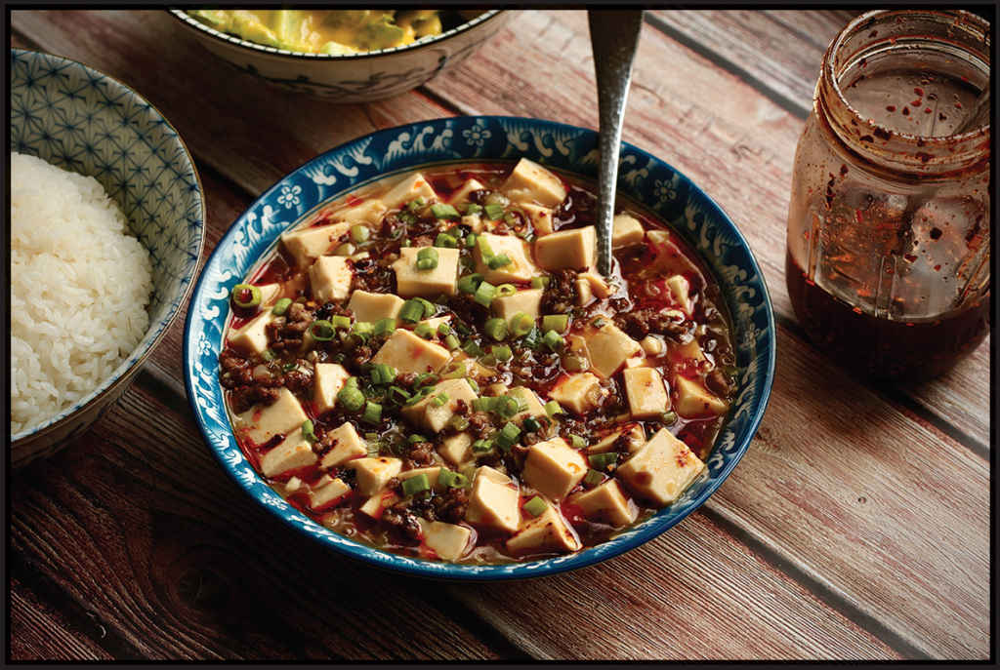

MY MOM’S JAPANESE-STYLE MAPO TOFU
|
Yield Serves 4 |
Active Time 15 minutes Total Time 15 minutes |
INGREDIENTS
1 teaspoon (3 g) cornstarch
1 tablespoon (15 ml) cold water
2 tablespoons (30 ml) peanut, rice bran, or other neutral oil
4 ounces (120 g) ground beef
2 teaspoons (5 g) minced garlic (about 2 medium cloves)
2 teaspoons (5 g) minced fresh ginger (about ½-inch segment)
2 scallions, chopped into ¼-inch pieces, dark greens reserved for garnish
2 tablespoons (30 ml) sake
2 tablespoons (30 ml) mirin
1 tablespoon (15 ml) shoyu or light soy sauce
¼ cup (60 ml) low-sodium chicken stock, dashi, or water
1½ pounds medium to firm silken tofu, cut into ½-inch cubes
Steamed rice and chile oil, for serving
This version of mapo tofu is similar to what we ate growing up, though instead of plain ground beef my mom would use the dish as an opportunity to use up leftover dumpling filling. You could do the same if you have leftovers from a batch of My Mom’s Beef and Vegetable Filling for Dumplings (here). Unlike the numbing-hot Sichuan version, this one is savory and sweet, with the classic Japanese flavors of soy, sake, and mirin, and comes together even faster, if you can believe it. It’s one of my go-to meals for the family when Alicia or Adri is not in the mood for spicy foods and I’m craving saucy soft tofu.
DIRECTIONS
1 Combine the cornstarch and cold water in a small bowl and mix with a fork until homogenous. Set aside.
2 Heat the oil in a wok over high heat until smoking. Add the beef and cook, stirring constantly for 1 minute. Add the garlic, ginger, and scallion whites and pale greens and cook, stirring, until fragrant, about 15 seconds. Add the sake, mirin, soy sauce, and chicken stock and bring to a boil. Pour in the cornstarch mixture and cook for 30 seconds, until thickened. Add the tofu and carefully fold it in, being careful not to break it up too much. Transfer immediately to a serving bowl and sprinkle with the scallion greens. Serve immediately with rice and chile oil.
